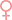
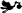

STOVENS Maria Josepha 
STOVENS Maria Josepha (
 15/01/1738 Wingene BEL )
STOVENS Petronilla Teresia
STOVENS Petronilla Theresia
STOVENS Petronilla Theresia (
12/03/1747 Wingene BEL - 12/04/1747 Wingene BEL )
STOVENS Petronilla Theresia (
04/04/1749 Wingene BEL )
STOVENS Petronilla Thresia
STOVENS Petrus Josephus
STOVENS Petrus Josephus
STOVENS Petrus Josephus
STOVENS Petrus Josephus
STOVENS Petrus Josephus
STOVENS Petrus Josephus
STOVENS Petrus Josephus
STOVENS Petrus Josephus
STOVENS Petrus Josephus
STOVENS Petrus Josephus
STOVENS Petrus Josephus
STOVENS Petrus Josephus
STOVENS Petrus Josephus
STOVENS Petrus Josephus
STOVENS Petrus Josephus
STOVENS Petrus Josephus
STOVENS Petrus Josephus
STOVENS Petrus Josephus
STOVENS Petrus Josephus
STOVENS Petrus Josephus
STOVENS Petrus Josephus
STOVENS Petrus Josephus
STOVENS Petrus Josephus
STOVENS Petrus Josephus
STOVENS Petrus Josephus
STOVENS Petrus Josephus
STOVENS Petrus Josephus
STOVENS Petrus Josephus
STOVENS Petrus Josephus
STOVENS Petrus Josephus
STOVENS Petrus Josephus (
04/06/1757 Wingene BEL )
STOVENS Petrus Josephus (
1705 Ruiselede BEL - 19/01/1771 Wingene BEL )
STOVENS Regina (
29/08/1782 Wingene BEL )
STOYAERT Elisabeth
STOYAERT Joanna (
1645 - 16/06/1712 Wingene BEL )
STOYAERT Livina STOYAERTS Maria
STOYAERTS Maria STOZIKI Xxx STRABACH Alexis (
31/12/1748 Barembach FRA )
STRABANT Jeannette (
1485 )
STRAGIER Leocadia
STRAGIER Pierre Léonard STRAGIERS Joseph (
04/03/1776 Koolskamp BEL )
STRAGIERS Maria (
08/03/1773 Koolskamp BEL - 27/03/1815 Lichtervelde BEL )
STRAGIERS Marie (
08/03/1773 Koolskamp BEL )
STRAGIERS Rogier (
13/05/1742 Ingelmunster BEL - 16/12/1783 Zwevezele BEL )
STRAGIERS Scolastica (
23/10/1778 Koolskamp BEL )
STRESE Hubertus STREUBBE Petrus (
15/06/1703 Wingene BEL )
STRIJNCK Anna STROBBE
STROBBE
STROBBE
STROBBE
STROBBE Adolf
STROBBE Alfons
STROBBE Amélie (
01/06/1825 Wingene BEL )
STROBBE Anna
STROBBE Anna
STROBBE Anna (
16/09/1696 Wingene BEL - 11/01/1738 Wingene BEL )
STROBBE Anna ( Maria ) (
17/02/1690 Wingene BEL - 12/11/1705 Wingene BEL )
STROBBE Antonius (
30/10/1725 Wingene BEL )
STROBBE Barbara
STROBBE Barbara (
21/02/1775 Wingene BEL )
STROBBE Barbara Teresia (
02/04/1724 Wingene BEL )
STROBBE Brigitta (
05/10/1701 Wingene BEL )
STROBBE Carolus (
22/08/1816 Wingene BEL )
STROBBE Carolus (
01/11/1839 Waardamme BEL )
STROBBE Catharina
STROBBE Catharina (
10/12/1757 Wingene BEL - 25/12/1757 Wingene BEL )
STROBBE Charles Louis (
04/06/1868 Knesselare BEL - 31/01/1925 Knokke BEL )
STROBBE Clarisse Lievine Marie (
11/04/1903 Brugge BEL - 07/06/1989 Knokke-Heist, B-8300, , West-Vlaanderen, Belgique )
STROBBE Clemence (
15/06/1878 - 20/10/1918 )
STROBBE Coleta (
14/03/1823 Wingene BEL )
STROBBE Constantinus
STROBBE Cyriel
STROBBE David
STROBBE Elizabetha
STROBBE Elodie (
17/09/1875 - 27/04/1966 )
STROBBE Florent
STROBBE Francisca (
06/01/1762 )
STROBBE Francisca (
27/03/1785 Wingene BEL )
STROBBE Gaspar
STROBBE Gaspar
STROBBE Gaspar (
15/06/1696 Wingene BEL - 09/08/1755 Wingene BEL )
STROBBE Gaspar (
15/09/1658 Wingene BEL - 09/12/1709 Wingene BEL )
STROBBE Gasparus
STROBBE Gasparus
STROBBE Gasparus
STROBBE Georgius (
05/08/1664 Wingene BEL - 18/11/1719 Wingene BEL )
STROBBE Gerda
STROBBE Gustaaf (
05/06/1881 - 1922 )
STROBBE Gustaff
STROBBE Helena (
22/01/1886 Gent BEL )
STROBBE Henri (
27/11/1842 Tielt BEL - 16/12/1919 Wingene BEL )
STROBBE Isidorius
STROBBE Jacoba
STROBBE Jacobus (
Wingene BEL )
STROBBE Jacobus
STROBBE Jacobus (
04/11/1669 Wingene BEL )
STROBBE Jaspar
STROBBE Joanna (
24/06/1698 Wingene BEL - 09/05/1699 Wingene BEL )
STROBBE Joanna Catharina (
23/03/1743 Knesselare BEL - 27/05/1819 Sint-Joris-Ten-Distel BEL )
STROBBE Joanna Maria (
1759 )
STROBBE Joannes (
21/02/1676 Zeveren, B-9800, , Oost-Vlaanderen, Belgique - 11/02/1724 Tielt BEL )
STROBBE Joannes Baptista
STROBBE Joannes Baptista
STROBBE Joannes Baptista
STROBBE Joannes Baptista (
07/03/1749 Tielt BEL - 11/05/1816 Aalter BEL )
STROBBE Joannes Franciscus (
12/11/1761 Wingene BEL - 06/09/1768 Wingene BEL )
STROBBE Joseph (
10/05/1821 Wingene BEL )
STROBBE Josephus
STROBBE Josephus (
21/12/1691 Wingene BEL )
STROBBE Josephus (
11/03/1726 Wingene BEL )
STROBBE Josephus (
27/09/1761 Wingene BEL - 02/06/1762 Wingene BEL )
STROBBE Josephus (
entre 1731 et 1763 Poeke BEL )
STROBBE Josephus (
1681 - 06/12/1755 Wingene BEL )
STROBBE Josephus Anthonius (
10/03/1731 Wingene BEL - 20/06/1746 Wingene BEL )
STROBBE Judoca
STROBBE Judoca
STROBBE Judoca (
23/05/1660 Wingene BEL )
STROBBE Judoca (
25/06/1666 Wingene BEL )
STROBBE Judocus
STROBBE Juliana
STROBBE Kamiel
STROBBE Laurentius
STROBBE Laurentius (
18/02/1713 Tielt BEL - 25/02/1792 Tielt BEL )
STROBBE Leo (
10/11/1818 Wingene BEL )
STROBBE Leocadia (
09/05/1755 )
STROBBE Livinus (
20/03/1744 Tielt BEL )
STROBBE Lodewijk (
01/06/1825 Wingene BEL )
STROBBE Lodewijk
STROBBE Maria
STROBBE Maria
STROBBE Maria
STROBBE Maria
STROBBE Maria
STROBBE Maria
STROBBE Maria
STROBBE Maria Anna
STROBBE Maria Anna (
21/03/1780 Wingene BEL )
STROBBE Maria Barbara (
10/12/1757 Wingene BEL - 23/12/1757 Wingene BEL )
STROBBE Maria Jacoba
STROBBE Maria Jacoba
STROBBE Maria Jacoba
STROBBE Maria Jacoba
STROBBE Maria Jacoba
STROBBE Maria Jacoba (
08/02/1751 )
STROBBE Maria Jacoba (
14/10/1757 Tielt BEL - 22/10/1841 Schuiferskapelle BEL )
STROBBE Maria Jacoba (
1729 Ruiselede BEL - 1794 )
STROBBE Maria Joanna (
15/06/1790 Wingene BEL - 03/02/1795 Wingene BEL )
STROBBE Maria Judoca (
07/08/1739 )
STROBBE Maria Judoca (
1749 Tielt BEL - 18/09/1775 Wingene BEL )
STROBBE Marie Thérèse (
31/05/1822 Tielt BEL )
STROBBE Martha (
24/03/1755 Wingene BEL )
STROBBE Martha (
04/03/1794 Wingene BEL )
STROBBE Martinus (
22/06/1700 Wingene BEL - 11/03/1701 Wingene BEL )
STROBBE Martinus (
08/02/1751 )
STROBBE Mathilda Maria (
14/01/1870 Tielt BEL - 18/10/1918 Schuiferskapelle BEL )
STROBBE Mathilde
STROBBE Melanie (
01/02/1831 Wingene BEL )
STROBBE Myriam
STROBBE Oscar
STROBBE Petronella Theresa (
29/06/1746 )
STROBBE Petronilla (
05/10/1701 Wingene BEL )
STROBBE Petrus
STROBBE Petrus
STROBBE Petrus
STROBBE Petrus
STROBBE Petrus (
31/03/1703 Wingene BEL - 06/02/1704 Wingene BEL )
STROBBE Petrus Franciscus (
21/02/1759 Wingene BEL )
STROBBE Petrus Ignatius (
16/05/1706 Wingene BEL - 17/06/1727 Wingene BEL )
STROBBE Petrus Joannes (
09/01/1742 )
STROBBE Petrus Joannes (
16/12/1758 Wingene BEL - 09/12/1795 Wingene BEL )
STROBBE Petus Antonius
STROBBE Philippus (
20/01/1672 Wingene BEL )
STROBBE Raphael (
24/10/1720 Wingene BEL )
STROBBE Regina (
05/11/1788 Wingene BEL - 03/09/1789 Wingene BEL )
STROBBE Rosalia (
16/12/1786 Wingene BEL )
STROBBE Rosalia (
13/10/1827 Wingene BEL )
STROBBE Silvia (
29/04/1873 Tielt BEL - 18/06/1917 Pittem BEL )
STROBBE Susanna (
30/06/1699 Wingene BEL - 08/01/1744 Wingene BEL )
STROBBE Theodorus (
28/08/1731 Wingene BEL - 12/04/1762 Wingene BEL )
STROBBE Victor Julius (
26/05/1894 Schuiferskapelle BEL - 10/06/1972 Beernem BEL )
STROBBEN Judoca STROBE Amandus (
25/10/1782 Wingene BEL - 08/11/1831 )
STROO Roger
STROO Sara STROOBANT Jacoba
STROOBANT Sophia (
16/10/1809 Brugge BEL )
STROOBANTS Andree Henriette Juliette STRUBBE Adolf Gustaaf (
22/08/1862 Koolkerke BEL - 02/11/1924 Lapscheure BEL )